Securing the Pieces
OneStream has been implemented, and your application is ready for security assignment. In most cases, OneStream recommends starting with minimal security and layering additional security as the need arises. The main reason is that it is easier to layer additional security than unwind an existing complex security model to a less complex security model.
Why is it easier? Well, if your application starts with extensive layered security, it will be difficult and more cumbersome to apply very specific intersection security. Additionally, organizational leadership changes can alter fundamental beliefs regarding security access, and it’s important to keep this in mind when designing your security model. The OneStream Foundation Handbook (Chapter 9: Security) does an excellent job of detailing security. This chapter supplements that content by helping the administrator to recognize where security exists throughout the application, best security practices, and basic administrator security tasks.
Securing the Pieces
Introduction to Security
Security is commonly defined as the state of being free from danger. Although there is no physical harm should there be a lack of OneStream security, there could be severe business consequences if application security is not applied.
This section will cover security within the OneStream application and where it exists. Why is this fundamental information important? Knowing the fundamentals of security will help make the use cases (later in the chapter) more relevant. Securing your application will make auditing partners happy and the life of the administrator for Information Technology Governance Controls (ITGC) testing (mentioned in Chapter 2: Testing) easier.
Securing the Pieces › Introduction to Security
What is Security within OneStream?
When end-users think of security, they often think of the parts of the application they are not allowed to visit, or chunks of data they are not allowed to view. When admins think of security, they look at security as another tool (or possible guide) to help send the end-user to the correct location of the application, or to help the end-user perform the correct task.
There is some merit that security is attempting to limit end-user interaction with parts of data or the application. A company would not want to give view access to everyone’s salary, or compensation details for every employee. This is a liability for the company – for multiple reasons – and will not be broached in this chapter.
Security in OneStream, though, can be thought of as two sections. Application security is often the one discussed most frequently and probably the most important. This is the ability to limit an end-user’s interaction within the application or data. This type of security exists in many locations within the application.
The unsung hero of security, however, is System Security Roles under the System tab, and the
Security listing within the Administration section (Figure 12.1).
System Security Roles can grant additional administration duties to alternate parts of an organization, and offer the ability for an organization to assign security to the artifacts that reside under the System tab. This could alleviate some of the administrative burden of the finance administrator and assign some responsibility to another department.
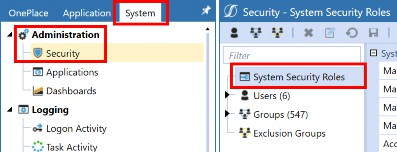
Figure 12.1
Securing the Pieces › Introduction to Security
Where Does Security Exist?
Though security feels like it exists anywhere and everywhere in the system (which it does), there is a method to OneStream’s security practices. As stated in this chapter, and in the security chapter in the OneStream Foundation Handbook, security should start as a basic model and work its way to become a detailed and complex security model. Again, it is easier to start basic and work up to complex, versus unwinding a detailed and complex security model. This point will be driven home over and over in this chapter!
This chapter is not a definitive overview of security; the Reference Guide in every application will cover those terms. Instead, this chapter will attempt to list all the places that security can be found (with maybe a quick comment or two), whilst deeper and more common security artifacts can be found in later sections of the chapter. Figure 12.2 shows an exhaustive table of all security within the OneStream Application, and if it can restrict data or access to the artifact.
| Component | Explicit Read/ Read and Write | Explicit Access/Maintenance |
|---|---|---|
| Security Groups | N | N |
| Cubes > Cube Properties | N | Y |
| Cubes > Data Access | Y | Y |
| Metadata (Entity, Scenario) | Y | Y |
| Metadata (Account, Flow, UD1-UD8) | N | Y* |
| Workflow Profiles | N | Y |
| Confirmation Rules | N | Y |
| Certification Questions | N | Y |
| Data Sources | N | Y |
| Transformation Rules > Groups and Profiles | N | Y |
Form Templates > Groups and Profiles | N | Y |
| Journal Templates > Groups and Profiles | N | Y |
| Cube Views > Groups and Profiles | N | Y |
| Workspaces > Maintenance Units | N | Y |
| Dashboards** > Dashboard Groups | N | Access Group (Pre 8.0) |
| Workspaces ** > Dashboard Profiles | N | Y |
| Application > Tools > Security Roles | N | Y |
| Business Rules | N | Y |
| Data Management > Groups and Profiles | N | Y |
| File Explorer | N | Y |
| Component | Explicit Read/ Read and Write | Explicit Access/Maintenance |
|---|---|---|
| System Security | N | Y |
| System Dashboards | N | Y |
| System Business Rules | N | Y |
*Account, Flow, and the custom UD members only have the Display Member Group as a security option. This option controls who can view the selected Account dimension member.
** For versions older than 8.0, you will find “Dashboards” as a valid selection, whereas in 8.0+, the Dashboard label is no longer applicable and is replaced by “Workspaces” security that can be applied interchangeably between dashboards and Workspaces.
Figure 12.2
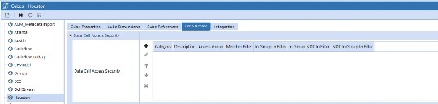
Note: Slice security is a term used to describe specific cell or intersection security. Slice security is also named data cell access security. This is where slice security is built and managed. The OneStream Foundation Handbook does a great job of providing additional slice security detail. Figure 12.3 |
As you can see, this is an exhaustive amount of security to apply. Are all or even most of the security filters/features used? No, that would be security overkill for your application. However, there are unique circumstances where some of these would be used or needed. This chapter will cover more of the common security applications.
Securing the Pieces
Nomenclature
Though each organization might have its own naming convention standards, OneStream has tried its best to state clearly what each security group is attempting to secure within the name of the group. For example, if the company is applying entity-based security, it might have E_Read or E_Write to assign entity read or entity write rights. As a further example, E_Write_Austin or E_Read_Austin would assume that the end-user has either the right to read data or write data to the Austin entity.
OneStream recommends using this same nomenclature for other security groups as well. E for Entity, WF for Workflow, J for Journal, S for Scenario, SSR for System Security Roles, ASR for Application Security Roles, and AUIR for Application User Interface Roles. Use identifiers in the name. Examples of identifiers would be the source of data (JDE, Oracle, Excel, PeopleSoft), geography/region, and the business unit or department that uses that data source (Corp, BUx, LOB).
This is meant to be a guide, not a hard and fast rule, of course. It is recommended to thoroughly document the naming conventions for an existing implementation, plus future security uses as well. People often change roles or leave a company, and no company would want mixed naming conventions due to a change of administrators.
Securing the Pieces
Common Security Practices
Each company will have its own unique security model, and this section just reflects common practices – used by many different organizations – and should be treated as such. The question of why we are not covering slice security will be asked, and we hope to address that here. Slice security is unique to specific use cases and is dependent on how stringent your company is with data.
OneStream security model implementations can be “mostly” covered by either limiting access to data or limiting access to artifacts. Limiting access to the data is probably the more critical security element to focus on first during (or post) implementation.
Securing the Pieces › Common Security Practices
Security Roles versus System Security Roles
Security Roles, found on the Application tab, provide the security to truly administer the application, and allows access to control or manage the application and grant or limit access as the company sees fit.
System Security Roles, found under Security on the System tab, allows specific users to control or manage the security found on the System tab.
| Note: Additional security is unable to be applied to roles until security groups are created. |
Securing the Pieces › Common Security Practices
Metadata Security
Metadata security can be thought of in terms of three security elements. The first security element is the ability to view the member within the hierarchy of the dimension. The Display Member Group setting restricts who can see the member in a hierarchy. However, if the user knows the member name, they could type this into the Spreadsheet or Excel add-in tool to view the data associated with that member. This Display Member Group security setting applies to all dimensions except the Scenario dimension.
The second security element limits the access of data. This can be accomplished on both the entity and the Scenario dimension members. Both Entity and Scenario members have the ability to bifurcate specific security settings to read only the data and read and write the data as defined by the implementing company. If entity and scenario security are not restrictive enough, then applying cube data access security (aka “slice security”) will be the next course of action.
The third and final metadata security element is related to the Dimension Properties tab. The Access Group and Maintenance Group control who can access this specific dimension. It can also facilitate access to a specific hierarchy for maintenance purposes. Utilizing this security setting can reduce the burden on an administrator in terms of maintaining a hierarchy. If someone other than the administrator will be performing dimension maintenance, security on the application Security Roles page will need to be adjusted. As an example, Figure 12.4 shows how the DimensionLibraryPage setting can be adjusted to the correct corresponding role.
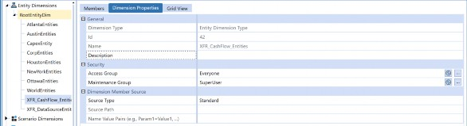
Figure 12.4
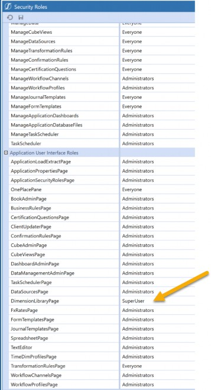
Figure 12.5
If the correct security access is applied, the newly created role will be able to edit a selected dimension but receive an error when attempting to edit other dimensions (i.e., where the role is not applied).
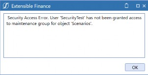
When applying security to metadata members, it’s best to think about what needs to be accomplished by applying the security. Do you want to limit who can view the member? Do you want to limit who can view the data? Or do you want to provide more access to whomever can perform maintenance? Knowing the answers to these questions will help provide a better security model for metadata.
Securing the Pieces › Common Security Practices
Artifact Security
Let’s say a hypothetical company has decided to only employ one or two administrators. In such cases, requests for ad hoc or one-off reports will typically be overwhelming. These administrators may spend all day doing nothing but building reports or Cube Views that may only be used once. There are myriad reasons why a company would refrain from building reports using the Excel add-in. The company may not have Microsoft Excel, they may have made an organizational decision not to use Microsoft Excel, they may want reports printed to PDF from the application, or leadership may want specific formatting.
The point here is that the administrator shouldn’t always be the one creating these ad-hoc reports. A select group of end-users can create them. This can be accomplished by applying the same desired security group to the Maintenance Group setting and CubeViewsPage on the Security Roles page. In the examples below, SuperUser as a security group is intended to be generically used and can be replaced with any security group a company desires in its place.
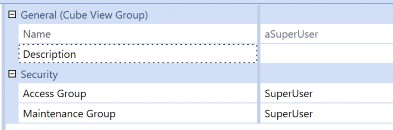
Figure 12.7
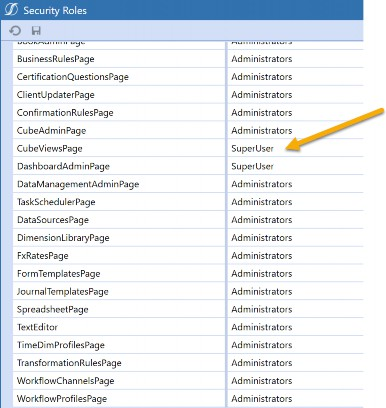
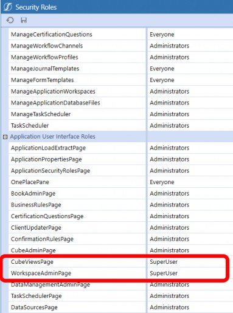
Figure 12.9
If your organization decides to allow end-users to have access to build reports, it is recommended to change the security on the Cube View Group of Maintenance Group from Everyone to Administrator. Security can’t be applied to individual Cube Views, and only applied to a specific Cube View group. This setup will allow the end-users to view the Cube Views as necessary, and not allow non-administrator security groups to edit or alter any key reports.
Often, there will be an organizational decision that select people are able to create ad-hoc reports. They are not, however, allowed to view each other’s work. To accomplish this, you can set the Access Group and Maintenance Group to have different access levels. Figure 12.10 is an example of three different security groups for end-users to alter the Cube Views that reside in those groups. This limits each group from seeing the work performed in the other reporting groups.
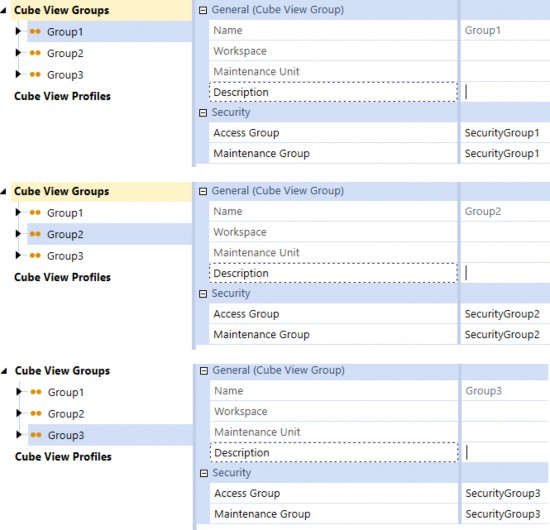
Figure 12.10
This type of setup will limit the ability of end-users to view or modify other end-users’ Cube Views/reports, if the company chooses to permit this limitation.
This section has mostly discussed Cube Views, but the same type of access can be performed against Workspaces as well. Workspaces and maintenance units have the same access and maintenance group assignment structure as Cube Views. In Figure 12.11, we accomplish the same setup for Workspaces by assigning the SuperUser security group to the WorkspaceAdminPage.
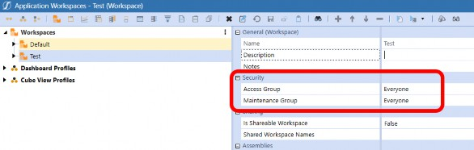
Figure 12.11
Note: The default Workspace within the Dashboard page can’t alter security. Maintenance units within the default Workspace can still have security adjusted. |
Securing the Pieces › Common Security Practices
FX Security
Companies will sometimes delegate FX maintenance to someone from Treasury or corporate accounting. To perform this activity, change the desired security on the Security Roles page. The security settings to change here are for both ManageFXRates under Application Security Roles; and FXRatesPage under Application User Interface Roles (Figure 12.12 & Figure 12.13).
If you only have ManageFXRates assigned, then that end-user will have the ability to change rates but will not be able to access the page. If you only have FXRatesPage access assigned, then that end-user can access the page but will be unable to alter any of the rates. Both are needed to access and alter any of the rates.
This end-user also has the ability to lock and unlock the FX rates if the same security group is assigned to LockFXRates and UnlockFXRates. Business requirements will determine how your security should or will be assigned for FX rates.
Figures 12.12 and 12.13 highlight that corresponding roles work together to allow someone other than the administrator to perform admin tasks on the FX page. Figure 12.12 shows that ManageFXRates grants the ability to actually change the FX Rates; Figure 12.13 shows the security setting that will grant access to the page.
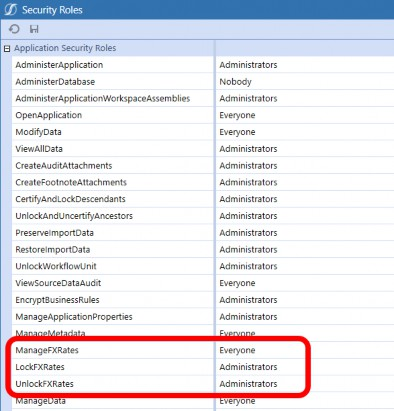
Figure 12.12
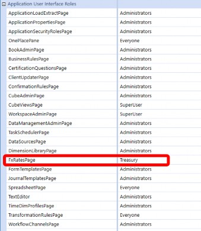
Figure 12.13
Securing the Pieces › Common Security Practices
Workflow Security
Workflow security can be the essential building block of security. By applying the correct workflow security, a company can control data loads, form adjustments, and journal entries all through different security groups or different end-users. Workflow security should drive your consolidation end-users versus your plan or budget end-users.
Each section of workflow security has the same standard four pieces of security:
Access Group
Maintenance Group
Workflow Execution Group
Certification SignOff Group
| Note: Adjustment Workflow Profile types offer three additional security groups. Journal Process Group, Journal Approval Group, and Journal Post Group. The three groups are discussed in detail further into the section. |
The access group security feature allows physical access to this section of the workflow. The access group can also act as a view-only security setting. The access group will allow access to the section of the workflow, but the end-user must have the security assigned to them that also has security assigned to the Workflow Execution Group. If they do not, then they can only access and view the workflow.
If the company wanted to prevent budget end-users from accessing the actual workflow processes, then they could apply a security group to prevent the budget end-users from entering this workflow using the access group.
Maintenance groups should generally be administrators. There are rare cases (which will be discussed later in this chapter) when permission might be given to super users.
The Workflow Execution Group allows a set of end-users to have the ability to complete a workflow step. This becomes important as it enables multiple end-users to complete workflow steps. The Certification SignOff Group allows individuals (assigned to the group) to sign off on processes, signaling that everything in the workflow has been completed.
| Note: The Certification Signoff Group is only applicable if “certify” is part of the workflow name. Also, if the company has Lock After Certify set to True, then manually locking a workflow is not applicable as every time an end-user certifies the workflow, each level of the workflow will automatically lock. This setting is found in the Application Properties section. Additional detail can be found in Chapter 3: Application Properties. |
One of the more common security requests received by OneStream is the assurance that the same end-user cannot create and post a journal. The settings to accomplish this feat for workflow security are found under the Security section for the Workflow Profile. The three extra groups relate specifically to the journaling process. The Journal Process Group can create an actual journal, whilst the Journal Approval Group (as the name suggests) can approve newly created journals. Finally, the Journal Post Group (anyone have a guess?) will post created and approved journals.
Preventing an end-user from creating and posting a journal will be a common security request from both your internal and external auditing partners. The report can be viewed under the Application Reports Dashboard by running the report “Workflow Profile Rights by User”. This report will allow someone to know what security each user has for a specific Workflow Profile. If you are unfamiliar with workflow structures or setups, refer to Chapter 6 in this book (Work the Workflow), or refer to the Foundation Handbook.
Organizational decisions will need to be made regarding the security around journals. Some companies will want the bifurcation of all three, which will mean three different sets of end-users to create, approve, and post a single journal. Some companies will say it is okay for the creator of the journal to also be the approver, but a poster needs to be a different end-user.
In versions 8.0 and greater, OneStream now offers two new segregation of duties settings related to journals. These new settings are Prevent Self-Post and Prevent Self-Approval. This second one prevents users from approving journals if the user has created or submitted the journal. Enabling the settings will disable Quick Post functionality within the adjustment workflow. These settings eliminate the need for a journal event handler rule to handle this functionality for them, as was the case in the past. For versions older than 8.0, a journal event handler rule will need to be created to accomplish the same segregation of duties as the settings below.
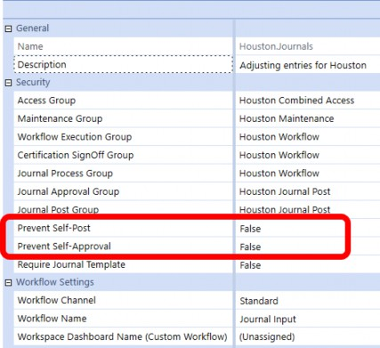
Figure 12.14
| Note: No matter what the security setup here, no notifications will be systemically sent to notify an approver or poster that the journal is ready for review and is actionable. If this is a requirement or request, a journal event handler business rule will be required to accomplish the requirement. Only one journal event handler can be assigned per application, but you can have multiple sections in the rule. |
Securing the Pieces › Common Security Practices
Nesting Security
Nesting security is a common OneStream practice to limit the number of security groups that an end-user is assigned to. For example, instead of assigning security groups A, B, and C to an end-user as three distinct groups, you can leverage nesting and assign one security group instead.
Nesting is the relationship between security groups where one is considered the parent, and the other is the child. Child security groups that are nested in a parent-level security group can access the data or artifacts that the parent group can – via the parent security group assignment (Figure 12.15). Removing a child security group from the parent group will revoke the access that the parent group provided.
The example below (Figure 12.15) shows that Users 1-3 are assigned to Security Group B. This assignment (Group B) also allows end-users to have Security Group A properties as well. In this example, Group B also represents the child security group, and Group A represents the parent group. The end-users in Group B will have access to any object that assigns Group A but will not have access to objects that assign Group C.
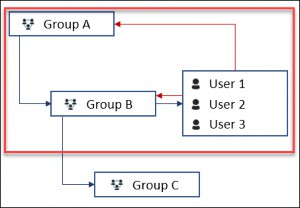
Figure 12.15
Securing the Pieces › Common Security Practices
Common Security Practices Closure
As one can see, OneStream has a lot of flexibility when it comes to security. Often, an organization will need to decide how to handle common asks or requests, but a central theme is how to make life easier for the OneStream administrator. One of the ongoing aims of OneStream is to streamline processes, make life easier for all parties, and not put a huge burden on the administrator.
Securing the Pieces
Common Security Frequently Asked Questions (FAQs)
This section is not intended to be an exhaustive list but rather a look at some of the more common questions that OneStream consultants and OneStream administrators get asked. When answering any question, the answer may be one of many possibilities. OneStream offers flexibility, and there can be different solutions for problems, after all!
Securing the Pieces › Common Security Frequently Asked Questions (FAQs)
Troubleshooting Cases
Securing the Pieces › Common Security Frequently Asked Questions (FAQs) › Troubleshooting Cases
Why Can’t I Access the System?
This one frequently comes up with new end-users. The end-user has access to the system approved and is ready to hit the ground running, but when they attempt to login, they either get an error or no access. A bulleted list of places to check:
Validate that the Application Security Role setting of OpenApplication is set to Everyone or the correct access if changed.
Validate the username they are using is correct.
Validate that the correct security has been assigned.
Ensure that the External Authentication Provider is properly selected.
Ensure that SSO (Single Sign-On) providers have the end-user assigned to the proper SSO group(s) needed to access the OneStream application.
These are just some of the common reasons an end-user may be unable to access the system. It would be a daunting task to name every possible solution to validate against. These are designed to provide a starting point.
Securing the Pieces › Common Security Frequently Asked Questions (FAQs) › Troubleshooting Cases
Why Can’t I View Any Data in the System?
The end-user now has access to the system, but they are unable to view any data. The first place to check is the POV pane. Does that pane have any question marks, signifying that it hasn’t been set for the user? If the end-user’s POV is properly set, then does the artifact they are attempting to view data through have the proper security assignments? If the artifact security looks correct, then it is time to check the security assignment page. Does the end-user have any, or the proper, assigned security? Does the security assigned to the end-user make sense for the end-user’s role? If yes, then I would ensure that security groups have been assigned throughout the application in the appropriate places. For example, make sure the designated security group is properly assigned to workflows, Cube Views, and access to metadata. Finally, validate that Security Roles under the Application tab has the OpenApplication and ViewAllData set to the correct security group as well.
Securing the Pieces › Common Security Frequently Asked Questions (FAQs) › Troubleshooting Cases
Why Am I Receiving a No Access Message on my Report?
The end-user doesn’t have sufficient security access to view a specific intersection. If the end-user should have access to the specific intersection, then the existing security will need to be adjusted. If your company has slice security, it warrants checking Cubes > Data Access and validating that the security is being properly sliced. If your company doesn’t have slice security, then you should look to validate against the metadata security. This could be a combination of either entity or scenario security.
Securing the Pieces › Common Security Frequently Asked Questions (FAQs) › Troubleshooting Cases
How Do I Limit Access by Workflows between Plan and Actuals?
The top-level workflows – Name_Act or Name_Plan – are defaulted to Everyone. If they need to be split by a security group, this can be set at the top workflow level. Figure 12.16 and Figure
12.17 show how this could be accomplished using security for the workflow cube root profile.
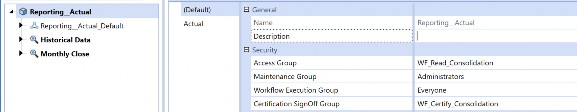
Figure 12.16
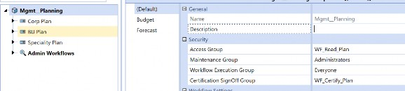
Figure 12.17
As you can see, by setting the proper security at the cube root profile, only users with WF_Read_Consolidation can see the actuals within that scenario, and users with the WF_Read_Plan can only see the budget and forecasting data.
| Note: Not every customer will have an extended workflow. Extended workflows mean having a suffix associated with the Scenario Type and creating a new workflow cube root profile. For additional details, refer to the workflow chapter. Remember, scenarios can be secured by the Scenario Type. Also, security can be applied to the specific scenario in the Scenario dimension. |
Securing the Pieces › Common Security Frequently Asked Questions (FAQs) › Troubleshooting Cases
Can Someone Other than the Administrator Handle Security Assignments?
Yes, under System > Administration, you will see System Security Roles (Figure 12.18). Adjust a combination of the following ManageSystemSecurityUsers, ManageSystemSecurityGroups and/or ManageSystemSecurityRoles to the desired group to control security. This page alters security assignments, although it is important to note that it impacts global settings and will affect all applications on that OneStream environment.
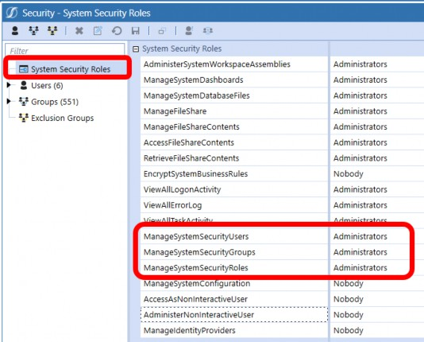
Figure 12.18
Securing the Pieces › Common Security Frequently Asked Questions (FAQs)
Common Security Maintenance
The below are maintenance suggestions, and administrators should always refer to company policy – first – when resolving matters. OneStream can be tailored to fit most (if not all) company policies.
Securing the Pieces › Common Security Frequently Asked Questions (FAQs) › Common Security Maintenance
Our End-User has Left the Company; How Should We Remove Security?
This is one of those instances where OneStream can handle the situation in many ways. The recommended approach would be to turn the end-user’s account of Is Enabled from True to False. This will disable the ability to even log into the application.
Knowing that companies also have data retention policies, OneStream recommends never to delete an end-user. Deleting the end-user will remove the User ID, and all the audit logs that contain that user will be replaced with “OneStream User”. It will be difficult for the auditing partners to understand why an unnamed OneStream user has performed an action or activity within the system.
Securing the Pieces › Common Security Frequently Asked Questions (FAQs) › Common Security Maintenance
Is there any Automation of Security Assignments or Security Processes?
OneStream has a MarketPlace solution to help handle the automation of security. Application Control Manager (ACM) is a solution designed to support and manage change requests and ensure the right level of control and governance over application changes. This pertains to mostly metadata-related changes, but also has a security element as well. ACM allows for the governance of user security creation and maintenance. Every OneStream customer has access to this solution. If your company is hesitant to implement this product, please reach out to your OneStream account manager to help procure an implementation consultant.
Securing the Pieces › Common Security Frequently Asked Questions (FAQs) › Common Security Maintenance
What Reporting Capability does OneStream offer for Security?
The out-of-the-box solution of Security Audit Reports should satisfy most audit requirements or requests from both internal and external audit partners. This reporting feature – if not already loaded to your application – can be downloaded from the OneStream Marketplace and uploaded to the OneStream environment. These reports include total end-user count, disabled end-users, added, deleted, updated, and inactive end-users. This report listing also includes security access changes, plus security group additions or deletions. All of this can be performed by date as well.
Securing the Pieces
Conclusion
As stated multiple times in this chapter and in other books, the recommended security approach is to think holistically about security and slowly apply more security against the application. Going live with a minimal amount of security will make the transition from other systems to OneStream smoother and easier to digest. As your application matures, then you can begin to ramp up your security needs and really lock down the application to company-specific requirements.
Security is often viewed as the prevention of seeing some data or preventing access to certain parts of the application. If we flip the narrative of the idea of security, we actually begin to think of security as an additional tool to help guide our end-users on the data journey. Security often makes our auditing partners happy; it satisfies many IT controls and is a necessary part of the application.
Security will never be the most exciting topic for any OneStream implementation, but security is a necessary part of the implementation. OneStream can solve the most complex security needs or requirements with its multi-layered approach to security. The ability to prevent end-users from accessing workflow or entity or scenario – even down to certain reports – satisfies many companies’ standards. Security can also take the burden of system ownership away from one system administrator and help them with dimension alterations.